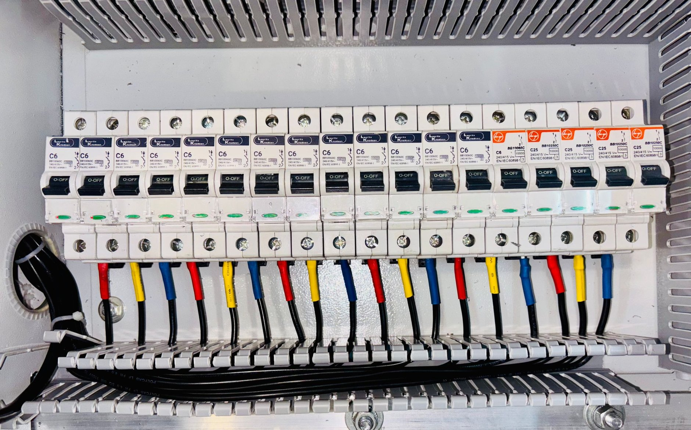
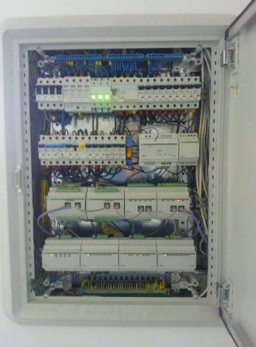

Usługi elektryczne Szczecin
Od wymiany gniazdka po szafę sterowniczą. Każde zlecenie zaczynamy od rozmowy i ceny ustalonej z góry. Szczecin, Police, Gryfino, Goleniów, Stargard i okolice.

Awarie i pogotowie elektryczne
Zgasła połowa mieszkania albo bezpiecznik wybija po włączeniu czajnika? Sprawdzamy obwód po obwodzie i usuwamy przyczynę. Nie podnosimy bezpiecznika „na próbę”.
Telefon odbieramy całą dobę. Przy awarii od razu mówimy, co wyłączyć, żeby do naszego przyjazdu było bezpiecznie.

- Brak prądu w części domu
- Wybijające zabezpieczenia
- Grzejące się gniazdka i przewody
Instalacje elektryczne
Budujesz dom albo robisz remont? Rozprowadzamy instalację od tablicy po ostatnie gniazdko: obwody, bruzdy, puszki, a na koniec pomiary z protokołem.
Wymieniamy też starą instalację w mieszkaniu. Punkty ustawiamy razem przy ścianie, żeby gniazdka były tam, gdzie stanie łóżko i telewizor.

- Domy, mieszkania i obiekty firmowe
- Wymiana starej instalacji w mieszkaniu
- Obwody pod płytę indukcyjną i AGD
Rozdzielnice i zabezpieczenia
Dokładamy różnicówki i ochronniki przepięciowe do starszych tablic. Różnicówka odcina prąd, zanim zrobi krzywdę człowiekowi.
Ochronnik zbiera przepięcie po burzy, zanim dojdzie do sprzętu. Nowe rozdzielnice składamy z opisanymi obwodami.

- Wyłączniki różnicowoprądowe
- Ochronniki przepięciowe
- Opisane obwody w tablicy
Oświetlenie i LED
Taśmy LED pod szafkami, wzdłuż schodów i w sufitach, lampy i żyrandole. Zdjęcie obok to basen z naszej realizacji.
Robimy sterowanie światłem: ściemniacze, czujniki zmierzchu, oświetlenie schodowe na czas. Wszystko obsługuje się zwykłym włącznikiem.

- Taśmy i profile LED
- Lampy, plafony i żyrandole
- Sterowanie i czujniki
Automatyka i sterowanie
Sterowanie oświetleniem i ogrzewaniem, automatyka bram, układy czasowe i czujniki.
W domach składamy rozdzielnice z modułami sterowania, w obiektach firmowych całe szafy z aparaturą. Obwody opisujemy, żeby po latach było wiadomo, co czym steruje.

- Sterowanie oświetleniem i ogrzewaniem
- Automatyka bram
- Szafy sterownicze
Pomiary elektryczne i protokoły
Do odbioru domu, do ubezpieczyciela po szkodzie, do wynajmu: wszędzie tam potrzebny jest protokół z pomiarów, nie „działa, sprawdzałem”.
Mierzymy, wypisujemy i podpisujemy. Jedna wizyta, dokument na lata.

- Pomiary przy odbiorze
- Protokół dla ubezpieczyciela
- Dokument z podpisem
Monitoring, alarmy i anteny
Kamery CCTV przy domu, firmie i posesji. Systemy alarmowe: czujki, centrala i sygnalizatory.
W obiektach firmowych sygnalizacja pożarowa (SAP). Do tego montaż i okablowanie anten Sat / RTV.

- Monitoring CCTV
- Systemy alarmowe i SAP
- Anteny Sat / RTV
Pogotowie elektryczne 24h
Zgasło? Iskrzy? Bezpiecznik nie daje się włączyć? Odbieramy całą dobę, 7 dni w tygodniu. Opowiedz, co się dzieje, a powiemy, kiedy możemy być i co wyłączyć do naszego przyjazdu.
Ile kosztuje elektryk w Szczecinie?
Zależy, co się dzieje, dlatego wypytujemy przez telefon i od razu podajemy widełki. Ostateczną cenę ustalamy przy oględzinach, zanim zaczniemy.
Czy wycena jest płatna?
Za obejrzenie i wycenę nie bierzemy pieniędzy. Płacisz za robotę, nie za rozmowę o niej.
Czy macie pogotowie elektryczne 24h?
Tak. Telefon odbieramy całą dobę, 7 dni w tygodniu. Brak prądu w całym domu to pilny wyjazd i przestawiamy grafik.
Dojeżdżacie poza Szczecin?
Tak: Police, Gryfino, Goleniów, Stargard, Pyrzyce i okoliczne miejscowości. Podaj adres przez telefon, a od razu powiemy, czy dojedziemy.
Mam starą instalację w mieszkaniu. Muszę wymieniać wszystko?
Niekoniecznie. Najpierw pomiary, bo to one pokazują, co naprawdę jest groźne. Czasem wystarczy nowa tablica i osobny obwód do kuchni, a reszta może poczekać do remontu.
Czy dostanę fakturę i protokół?
Tak, fakturę na firmę albo osobę prywatną. Protokół dostajesz razem z nią, jeśli robiliśmy pomiary.